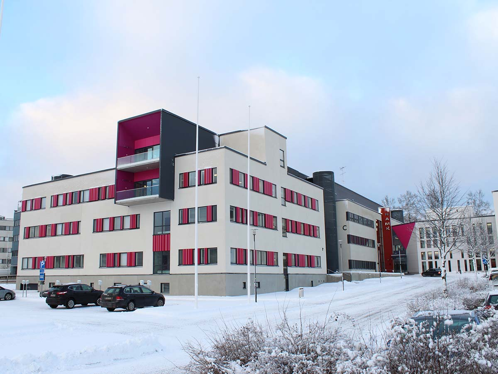

 Avoin Data
HAMKin avoin data
Julkisuuslain mukaisesti kaikki julkisen hallinnon tieto on julkista, jos sitä ei ole syytä salata. HAMK on osaltaan mukana avaamassa tietoa käytettäväksi. Avoimen datan hyödyntäminen tuo etuja organisaation ulkopuolisillekin toimijoille. Se on tietosisältöä, joka on maksutta hyödynnettävissä. HAMK tarjoaa opetus- ja sovelluskehityskäyttöön veloituksetta seuraavat tietosisällöt ja rajapinnat:
Tiedot haetaan operatiivisesta järjestelmästä reaaliaikaisesti ja rajapinnat ovat käytettävissä pääsääntöisesti 24/7.
Rajapintojen käyttämiseen tarvitaan API-avain, jonka voit anoa tällä lomakkeella. Avain on henkilökohtainen ja HAMK valvoo niiden käyttöä. Rajapintojen käyttäminen tapahtuu omalla vastuulla. Avoindata.fi -sivusto Avoimen datan hyödyntäjä -kurssi